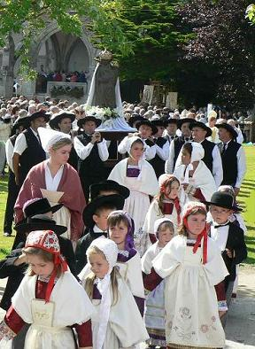
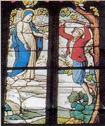
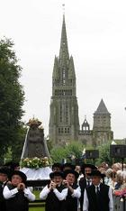
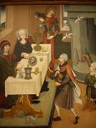
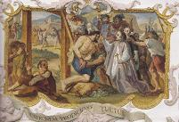
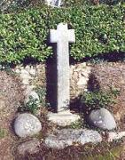
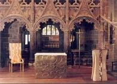
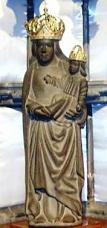
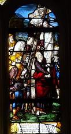

Notre Dame du Folgoët
Our Lady of Folgoët
Dialecte de Léon
|
La Villemarqué a noté en mage du chant "Ar yaouankiz", p.253 du 1er cahier de Keransquer : " Marianne Ollier [=Olivier] , épouse Delliou [1768-1845], qui a déjà chanté Notre-Dame du Folgoat (publié)..." S'agit-il d'une erreur ou d'une autre version? - Sous forme manuscrite : . par De Penguern t.89: "Franceza Kozik" (Taulé, 1851), publié dans la revue "Gwerin" N°5. . Par La Borderie, MS 43680 (R), 35: "Gwerz Itron Varia Folgoat". - Publié sous forme de feuille volante : "Recit deus ar miracl burzudus c'hoarvezet dre brotection Itron-Varia ar Follgoat", catalogue Ollivier, N°971. - Publié dans des recueils: . par Luzel, "Gwerzioù" 1: "Fantik ar Pikart" (Trégrom,1854); "Fantik Pikart" (Plouaret, 1849); "Annaïk Kozik" (Plouaret, 1847); "Franseza Kozik" (Plouaret, 1854); "An aotroù ar Gervenn" (Duault). "Gwerzioù 2: "Jannig ar Gall" (Prat, 1872) . par Bourgeois, "Kanaouennoù Pobl", "Leskildri". - Publié dans des périodiques : . par Jouan, dans les "Annales de Bretagne" XXVI (1911), "Itron Varia Folgoat" (Saint-Gilles-Pligeaux). Note: selon le cas ces références correspondent au § II ou aux §§ I, III-IV du chant du Barzhaz. |
 |
La Villemarqué noted opposite to the song "Ar yaouankiz", p.253 of the 1st Keransquer copy book: " Marianne Ollier [=Olivier] , wife of Delliou [1768-1845], who already sang Notre-Dame du Folgoat (published)..." Is it a mistake or does he mean another version? - In handwritten form : . By De Penguern t.89: "Franceza Kozik" (Taulé, 1851), published in the periodical "Gwerin" N°5. . By La Borderie, MS 43680 (R), 35: "Gwerz Itron Varia Folgoat". - Published as a broadside song : "Recit deus ar miracl burzudus c'hoarvezet dre brotection Itron-Varia ar Follgoat", catalogue Ollivier, N°971. - Published in collection books: . by Luzel, "Gwerzioù" 1: "Fantik ar Pikart" (Trégrom,1854); "Fantik Pikart" (Plouaret, 1849); "Annaïk Kozik" (Plouaret, 1847); "Franseza Kozik" (Plouaret, 1854); "An aotroù ar Gervenn" (Duault). "Gwerzioù 2: "Jannig ar Gall" (Prat, 1872) . by Bourgeois, "Kanaouennoù Pobl", "Leskildri". - Published in periodicals : . by Jouan, in "Annales de Bretagne" XXVI (1911), "Itron Varia Folgoat" (Saint-Gilles-Pligeaux). Note: these references may correspond either with § II, or with §§ I, III-IV of the Barzhaz lament. |
|
est l'un des chants de pélerinage étudiés dans CANNIBALES, TOMBEAUX ET PENDUS un essai au format LIVRE DE POCHE 
de Christian Souchon |
is one of the pilgimage songs presented, in French, in CANNIBALES, TOMBEAUX ET PENDUS (Cannibals, graves and gallows) as a PAPERBACK BOOK
by Christian Souchon |
Cliquer sur le lien ou l'image - Click link or picture for more info
Ton
(Bien que la mélodie n'utilise que 4 notes, il sembe qu'elle soit de mode hypophrygien, noté en la mineur dans le Barzhaz)
Français
English
I
1. - Mon père, je vous salue bien!
- Que faites-vous là si matin? o!, o!
- Que faites-vous là si matin?
2. Plus blancs que neige sont ces draps.
Vous les lavez. Dites, pourquoi?
3. - Mon cher père, n'iriez-vous pas
Au Folgoët, prier pour moi?
4. D'y aller pieds nus il importe,
Sur vos genoux, s'ils le supportent.
5. Vous verrez, en cendres réduit,
Le cœur que vous avez nourri.
6. - Qu'avez-vous donc fait pour prétendre
Ma fille, être réduite en cendres?
7. - Un jeune enfant retrouvé mort.
De ce meurtre on m'accuse à tort. -
II
8. Un jour le sieur de Pouliguen
S'en fut chasser de bon matin.
9. - Qu'est-ce donc? Un lièvre écorché?
Non, c'est un enfant étranglé.
10. Fixé sur cette branche un bout
De ruban enserre son cou. -
11. Et il s'en fut trouver sa femme,
Avec bien du chagrin dans l'âme.
12. - Voyez l'innocente victime!
Quelle mère a commis ce crime?
13. La dame alors, sans dire mot,
Se rend à la ferme aussitôt.
14. - Fermière, pourquoi ces soupirs?
Votre chanvre pousse à ravir!
15. - Il ne pousse pas bien. Ca non!
Il est la proie de vos pigeons.
16. - Vos filles, ne sont point ici?
Je ne vois que vous au logis.
17. - Deux sont à la rivière et lavent,
Deux autres à l'échalassage,
18. Deux autres à l'échalassage,
Et les deux autres au peignage.
19. Et Marie-Fanchonik ma nièce
Est au lit et gémit sans cesse.
20. Malade, elle est au lit depuis
Huit ou neuf jours, jusqu' aujourd'hui.
21. - Fermière, il faut que je la voie
Car c'est ma filleule. Ouvrez-moi.
22. - Dites-moi, ma filleule, où donc
Vous avez mal? - C'est entre mon
23. Ventre et mon cœur que gît ma peine.
Oui, c'est là que j'ai mal, marraine.
24. - Filleule, debout, de ce pas
Allez voir le Père François!
25. Confessez-lui votre péché.
Prenez garde à n'y point manquer.
26. - C'est bon pour une pécheresse:
J'étais récemment à confesse.
27. - Je n'admets pas que vous mentiez.
Vous avez fait un grand péché.
28. Car vous fûtes au bois tantôt:
Voyez le sang sur vos sabots! -
III
29. - Mon petit page, dites-moi,
Qui donc marche ainsi de ce pas?
30. - De Guigourvez à l'échafaud
Votre filleule et le bourreau; -
31. Dur eût été qui n'eût pleuré
Quand sur la place on l'a menée
32. Entre deux archers, tout au plus
A quinze ans, pour être pendue,
33. Précédée d'une vieille femme
Qui d'un cierge veillait la flamme
.
34. Et la jeune fille disant:
- Non, ce n'était pas mon enfant! -
35. Et derrière eux venait la dame
Qui gémissait à fendre l'âme:
36. Si ma filleule l'on me rend,
Vous aurez son pesant d'argent.
37. Si cela ne vous suffit pas
De mon cheval prenez le poids,
38. De mon cheval, et de surplus,
La jeune fille et moi dessus.
39. - Elle ne sera pas rendue.
Quiconque a tué, on le tue. -
IV
40. Lorsque le sénéchal déjeune,
Le bourreau se mit en besogne.
41. L'affaire est claire et, cependant,
Il revient au bout d'un moment.
42. - Monsieur, que faire, dites-moi?
Marie Fanchonik ne meurt pas.
43. Et lorsqu'avec le pied j'appuie
Sur ses épaules, elle rit.
44. - Détachez-la de ce gibet
Et menez-la sur un bûcher.
45. - Il faut du feu, de la fumée
Et un bûcher pour la brûler! -
46. Au bout d'un moment le bourreau
Revient le trouver, tout penaud.
47. - Monsieur, c'est à n'y rien comprendre,
L'effet du feu se fait attendre.
.
48. Malgré la flamme et la chaleur,
On la voit rire de bon cœur.
49. - Moi je croirai ce que tu dis
Lorsque chantera ce coq-ci. -
50. (Sur le plat des pattes étaient
D'un chapon tout ce qu'il restait).
51. Le sénéchal interloqué
Entendit le chapon chanter.
52. - Marie Fanchonik, pardonnez.
Vous avez dit la vérité.
53. J'ai failli. C'est bien malheureux.
Qui vous préserve de ce feu?
54. Notre Dame du Folgoët
Qui de dessous mes pieds l'écarte.
55. La Vierge, mère des chrétiens
Qui l'éloigne aussi de mon sein.
56. - Qu'on envoie vite à Guigourvez
Qu'on mette à l'épreuve le reste.
57. À la ferme de Guigourvez
Pour démasquer la pécheresse. -
58. A travers le feu tous passèrent.
Tous à l'épreuve résistèrent.
59. Oui, du feu chacun triompha.
Seule la servante y resta.
Traduction Christian Souchon (c) 2008
I
1. - Father, I bid you a good day!
- Quite early you got up, I say! O!, O!
- Quite early you got up, I say!
2. Why wash these shrouds as white as snow?
What's the use of it? Let me know!
3. - I came, father, to entreat you
For my sake to Folgoët to go.
4. Walk barefooted there, for my sake,
On your knees, if you stand the ache.
5. There you shall find, to ashes burnt,
This heart of mine that you nurtured.
6. - What sacred law, lass, did you break
That you shall be burnt at the stake?
7. - A strangled babe that they did find
And they accuse me of that crime. -
II
8. One day the Lord of Pouliguen
Had gone hunting before his lunch.
9. - Look here, look here! It's a skinned hare!
No, a throttled babe, hanging there.
10. Hangs by a lace that still around
Its neck and to this branch is bound. -
11. And off he went his wife to find.
Gloomy thoughts weighing on his mind!
12. - Look! A poor child someone has slain
Who has born this child, in God's name?
13. But the lady who no word said
Repaired at once to the farmstead.
14. - How are you, my dear farmer's wife?
Your hemp in the field seems to thrive.
15. - My hemp by no means gets along
As your pigeons do it much wrong.
16. - Where are your daughters now all gone?
Since I find you at home alone?
17. - Two of them at the washing pool.
Two others driving in hemp poles.
18. Two others driving in hemp poles
And two hackling, to make a whole.
19. I forgot Mary Fanchonik
Who lies in bed for she is sick.
20. Yes, she has been bedridden for
Eight or nine days, or even more.
21. - Quick, open, wife of my farmer.
I want to see my goddaughter.
22. - My goddaughter, will you tell me,
Where's the seat of your malady?
23. - Between my stomach and my heart,
Godmother, is where the pains start.
24. - Get off your bed. Father Francis
Will hear you. To him you confess!
25. Confess your sin. Take my advice.
Be careful. I won't say it twice!
26. - So sinful a girl I 'm not, though.
I have confessed eight days ago.
27. - O, don't tell me that kind of lie!
You sinned greatly, you can't deny:
28. You went this morning to the wood.
Your clogs are still all stained with blood! -
III
29. - My little page, just a question:
Who is walking in procession?
30. - In front, your Guigourvez farmer,
Then the hangman, your goddaughter. -
31. Cruel would have been whoever had
Come to Folgoët market and not cried.
32. On that fifteen year girl, coming
Between two archers for hanging!
33. An old wife, ahead of the band,
With a wax candle in her hand.
34. And the poor lass who did repine:
- This child, for sure, it was not mine! -
35. Then, earnestly asking mercy,
For her goddaughter, the lady.
36. - O set free my goddaughter, do!
Her weight in silver I'll give you.
37. Is it not enough? No remorse!
I'll give you the weight of my horse!
38. Yes, of my horse, at any rate,
The girl and me adding our weight.
39. - Your goddaughter won't go again.
For whoever slew, must be slain. -
IV
40. Now the seneschal to lunch goes
While the hangman prepares the noose.
41. But just a few moments later
The hangman comes to his master.
42. - Lord Seneschal, all goes awry.
Mary Fanchonik will not die!
43. With my foot I press her shoulder:
She looks at me with a laughter!
44. - Another course of action take.
Now she must be burnt at the stake.
45. - Rather than hang from the gallows
In fire and smoke she must wallow! -
46. But a little while thereafter
Back came the executioner.
47. This Mary Fanchonik will drive
Me mad, Lord, she is still alive!
48. She stands breast-deep within the fire.
And yet she feels to laugh inspired.
49. - Before I believe what you told
This capon here, it will have crowed!
50. (The roasted fowl, returned to egg,
Lay, eaten up but for the legs.)
51. The seneschal found it baffling
When the capon was heard crowing.
52. - O Mary pardon me! -, he said:
- You were right and I was misled.
53. I was misled and you were not.
Who saved you from the fire so hot?
54. - Saint Mary of Folgoët discreet-
lY swept the fire beneath my feet.
55. The Holy Virgin, whom God blessed.
She swept it away from my breast.
56. - Send men to Guigourvez quickly,
To the farmer's wife presently!
57. Presently to the farmer's wife.
The sinful one is still alive. -
58. They suffered all the ordeal
By fire. It was endured by all.
59. All of them did walk through the fire.
Only the maid was to expire.
Translated by Christian Souchon (c) 2008
Cliquer ici pour lire les textes bretons (versions imprimée et manuscrite).
For Breton texts (printed and ms), click here.

|
Résumé
Un miracle à l'actif de ND du Folgoët: une jeune fille, Marie Fanchonik, accusée d'infanticide est condamnée à la pendaison, puis au bûcher. L'officier de police à qui on rapporte que ces supplices n'ont pas de prise sur elle, s'écrie "je vous croirai quand le chapon qui est dans mon assiette aura chanté!" Et c'est aussitôt ce qui se produit! Le sénéchal fait passer à travers les flammes tous les habitants du hameau: seule une servante, la vraie coupable succombe à cette épreuve. Le pèlerinage de Notre-Dame du Folgoët  Pendant la guerre de succession du Duché de Bretagne (1341 -1364) , un mendiant faible d'esprit nommé Salaün (Salomon) qui vivait seul dans le bois de Lesneven, dans le dénuement le plus complet, était connu pour sa dévotion de chaque instant à la Vierge Marie. Il ponctuait par des "Ave Maria!" toutes ses activités: mendicité (il demandait l'aumône en répétant : "Ave Maria, Salaün mangerait bien un morceau de pain! -Salaün a zebrfe bara!), bains dans l'eau glacée, gymnastique dans les arbres en plein hiver. C'est pourquoi on l'appelait Foll ar C'hoad , le Fou du Bois.Une fois il fut appréhendé par une bande de soudards à qui il déclara: "Je ne suis ni Blois, ni Montfort . Je suis serviteur de la Vierge Marie." Les soldats se prirent à rire et le laissèrent aller. Selon le chroniqueur du 17ème siècle, Albert Le Grand , on affirme que pendant les quarante huit années que dura sa vie, la Vierge accompagnée d'une grande clarté et environnée de créatures célestes lui apparut plusieurs fois pour l'encourager. Lorsqu'il mourut, vers 1358, près de la fontaine et du tronc d'arbre qui lui servait d'abri, on l'enterra sur place. Aujourd'hui encore on peut voir au village de Lannuchen, près du manoir de Kergoff, la croix encadrée des quatre pierres qui ornaient son tombeau. Un lis odoriférant poussa sur celui-ci, portant écrit sur ses feuilles en lettres d'or ces deux mots "Ave Maria". En ouvrant la tombe, on constata que ce lis avait pris racine dans la bouche du défunt Averti des merveilles qui s'y déroulaient, le Duc de Bretagne Jean IV de Montfort , pour se faire pardonner les pillages d'églises et de monastères commis par ses alliés dans le Léon, fit bâtir à cet endroit un sanctuaire à Notre-Dame, dès 1365. Il mourut en 1399 en recommandant à son fils Jean V de poursuivre son œuvre. En 1419, l'évêque de Léon bénit cet édifice, un chef d'œuvre d'architecture religieuse bretonne, qui fut érigé en collégiale par Jean V en 1423 et devint célèbre par un grand nombre de miracles, dont celui rapporté par la présente ballade. La Villemarqué note que la ballade est nécessairement postérieure à la fondation de la collégiale du Folgoat en 1423 et la place immédiatement avant le chant des "Ligueurs" qui relate leur départ pour le siège de Craon (Mayenne) en mai 1592. Francis Gourvil (p. 457 de son "La Villemarqué") critique cette datation aumotif que "l'usage des prénoms doubles [ "Marie-Fanchonik" en l'occurrence ] ne remonte pas, en Basse Bretagne , au delà de la seconde moitié du XVIIème siècle, ce qui suffirait à rajeunir la pièce d'une centaine d'années" Pardon, cantique et "Pemp sul"  Comme l'indique la ballade, le Pardon du Folgoët a vu très tôt accourir les fidèles de toutes conditions sociales, depuis la reine Anne de Bretagne jusqu’aux plus humbles paysans. A la fin du 16è siècle, le jour de l’Assomption la procession générale est déclarée « obligatoire » pour toutes les paroisses du diocèse de Léon. Même durant la Révolution, l’église du Folgoët dut être rouverte plusieurs fois pour satisfaire la dévotion des fidèles. Vers 1900, le jour du pèlerinage est fixé au 8 septembre, jour de la Nativité de Marie et depuis 1970, la célébration du Grand Pardon débute le premier samedi de septembre pour se poursuivre le lendemain dimanche. Il comporte aujourd'hui une messe, en langue bretonne, le samedi à 18 heures, célébrée à l’extérieur de la basilique, suivie d'une Procession aux flambeaux qui draine la foule vers l’esplanade du Pardon, laquelle revêt un caractère moins traditionnel : jeux scéniques, des chants. Le lendemain la messe de 10h.30 est dite devant la foule massée sur l’esplanade de la chapelle des Pardons. Elle est présidée par un évêque invité et l’évêque du diocèse.La grande procession des croix et des bannières portées par les fidèles des paroisses environnantes, en costumes de fêtes, à 15 heures, conduit les pèlerins vers la chapelle des Pardons. La "Vierge Noire" couronnée clôt la longue procession. En 1873, l'Abbé Jean Guillou (1830 -1887), professeur au collège de Lesneven composa, sur une mélodie que l'on doit une religieuse de Crozon, Sœur Anne de Mesmeur, un cantique "Patronez dous ar Folgoat" inspiré par les grands événements du moment: la défaite de 1870 et l'annexion des Etats Pontificaux. Il fut chanté pour la première fois le 25 mai 1873, lors du rassemblement clôturant les "Pemp Sul" qui réunit cette année-là plus de 40.000 pèlerins et 200 prêtres. Cette dévotion des "cinq dimanches" de mai (ar Pemp Sul), est une dévotion bien antérieure à ce qu'on appelle "le Mois de Marie", et remonte à un passé très lointain. Le Pape Pie IX (1846-1878) avait confirmé les faveurs spéciales accordées aux fidèles qui venaient prier au Folgoët durant les cinq dimanches de mai (et le premier dimanche de juin lorsque le mois de mai ne comporte que quatre dimanches, fête de l'Ascension comprise). Vision miraculeuse ou visite au confesseur On peut interpréter la première partie (strophes 1 à 7) de l'histoire, comme le fait La Villemarqué: une vision miraculeuse. "La veille du jour où elle va être brûlée vive, [la jeune fille], apparaît en rêve à son père, du fond de la prison où on l'a jetée. Il la voit au lavoir, occupée à blanchir des nappes déjà blanches, symbole de sa parfaite innocence et elle le prie d'aller en pèlerinage à son intention, à Notre Dame du Folgoët." On peut aussi comprendre, bien que cela soit moins cohérent, qu'il s'agit de la visite de la jeune fille au père François, auquel sa marraine l'avait invitée à se confesser (strophes 24 à 28). Selon La Villemarqué, il s'agirait de François du Fou (ou du Faou, famille à laquelle appartenait Geneviève de Rustéfan ), doyen de l'église collégiale du Folgoët qui comparut à Nantes le 2 octobre 1539 pour la rédaction des réformations des Coutumes de Bretagne. L'"option vision" est explicitement celle retenue dans l'une des ballades collectées par F-M. Luzel. On remarquera avec quelle adresse La Villemarqué a su combiner ces diverses pièces pour en faire un récit cohérent, si ce n'est que la véritable coupable n'apparaît qu'à la dernière strophe et de façon inattendue. Cette ballade est une des plus populaires de Basse Bretagne où elle existe dans les quatre dialectes. F-M. Luzel l'a recueillie 7 fois! Elle doit cette popularité, nous dit La Villemarqué, au fait que, comme dans Le frère de lait l'au-delà intervient pour rétablir la justice en ce bas monde. C'est cette certitude qui est le fondement de l'ordalie. Ordalies par le feu et par l'eau Cette bizarre pratique de la justice médiévale admettait que la culpabilité ou l'innocence d'un accusé soit déterminée en le soumettant à une épreuve douloureuse. S'il résistait à l'épreuve sans séquelle ou avec des séquelles passagères seulement, le prévenu était considéré innocent. La procédure partait de l'idée que Dieu aiderait l'innocent en opérant un miracle en sa faveur. Dans le cas présent, les prévenus sont tenus de traverser un brasier et leur innocence est établie par l'absence complète de blessures. Il était plus courant cependant que les blessures résultant de l'épreuve soient pansées, puis examinées plus tard par un prêtre habilité à dire si Dieu était intervenu pour les guérir. Dans le cas contraire, le suspect était puni. L'ordalie par l'eau bouillante exigeait que le prévenu trempe sa main dans un bac rempli d'eau bouillante. Si, au bout de trois jours, Dieu n'avait pas guéri ses brûlures, l'accusé était réputé coupable. Le Coq rôti qui chante  Dans la "Note" qui suit le chant, La Villemarqué indique que l'histoire du chapon rôti qui chante est empruntée au "Martyrologium hispanum" de Juan Tamayo de Salazar .On trouve la même remarque dans les "Gwerzioù Breiz Izel" de F.M. Luzel à propos de la seconde version du chant "Marc'harid Lauranz" : "Cette légende du chapon rôti qui chante sur la table du Sénéchal, ou à la broche, suivant d'autres leçons, est-elle d'origine bretonne ? Je ne sais, mais on la trouve aussi en Espagne, où elle passa de la légende de saint Dominique de La Calzada dans celle de saint Jacques de Compostelle. Des pèlerins bretons l'auront peut-être apportée de Santiago en Bretagne. Un poète anglais, un poète lauréat, Robert Southey, a trouvé dans cet épisode, puisé dans le Martyrologium Hispanum de Tamayo Salazar, le sujet d'un poème, qui porte dans ses œuvres le titre de The Pilgrim to Compostela , et dont voici en quelques mots la fable : 'Des pèlerins de France, le père, la mère et le fils, se rendant à Saint- Jacques de Compostelle, s'arrêtent à une "posada", ou auberge, tenue par une femme que le poète nous fait connaître, en disant qu'elle eût été la digne fille de Lady Putiphar. Cette femme trouve dans le plus jeune des trois pèlerins la vertu de Joseph, et, furieuse de ses refus, le dénonce comme voleur à l'alcade. L'alcade le condamne à la potence ; et il est pendu, après avoir obtenu préalablement de son père et de sa mère qu'ils continueront leur pèlerinage, ce qu'ils font en effet. Mais à leur retour, ils retrouvent leur fils encore vivant, et qui les console, en leur disant, d'un air content, qu'il les attendait patiemment depuis six semaines. Quoique je ne puisse pas me plaindre, dit-il, d'être fatigué, et que mon cou ne me fasse pas le moindre mal, allez trouver l'alcade, ce juge si prompt à juger injustement, et dites-lui que saint Jacques de Compostelle m'a sauvé, et qu'il faut enfin me descendre du gibet. Or, l'alcade venait de s'asseoir à table, et commençait son dîner. Il levait déjà le couteau sur le plat de rôti. Dans ce plat étaient deux volailles, un coq et sa poule fidèle, qui le matin encore chantaient dans la basse-cour. L'alcade refuse de croire que Santiago fasse ainsi des miracles en faveur d'un Français et d'un voleur. « Je croirais aussi aisément, dit-il, que ce coq et cette poule pourraient revenir à la vie ! ». Soudain le coq se lève, et chante, et sort du plat, suivi de sa poule !' Dans le Barzaz Breiz, cet épisode se trouve dans la pièce qui a pour titre "Notre-Dame du Folgoët" (p. 272, 6è édit.), et qui correspond aux trois pièces qui vont suivre: "Annaïk Kozik", "Franseza Kozik", "An Aotrou Ar Gerwenn". Le thème du Coq miraculeux est traité, à propos des chants anglais "Saint Etienne et Hérode" et "La corneille et la grue" , par Francis-James Child dans ses "English and Scottish Popular Ballads" (vol.I p. 106 et VI p.502). Il cite en une foule d'occurrences dans les folklores du vieux continent. Gaidoz dans un article de "Mélusine" ("Le coq cuit qui chante") atteste également de la popularité de ce symbole de résurrection qui surmonte nos clochers depuis le iXème siècle. Autres réminiscences littéraires Lorsqu'une gwerz raconte un fait divers précis (ex: "L'orpheline de Lannion"), l'influence de modèles écrits doit être à peu près nulle. La présente pièce, à caractère hagiographique, au contraire, fait indubitablement appel à certaines références littéraires. C'est qu'en effet, les auteurs et le public des gwerzioù n'étaient pas tous des illettrés. Une pièce collectée par De Penguern, T.91, "An Itron" (La Dame), commence ainsi:
L'histoire est effectivement atroce à souhait: un mari oblige son épouse, qu'il a attachée à côté du cadavre dépecé de son amant, à boire dans son crâne!
Il s'agit de la 32ème veille de l'"Heptaméron" de Marguerite de Navarre (1492 - 1549, la sœur de François Ier), telle qu'elle a été résumée, à la suite d'une autre histoire de la même veine, par Brantôme (1535 - 1614).: "Un seigneur de Dalmatie... ayant tué le paillard de sa femme, la contraignit de coucher ordinairement avec son tronc mort, charognux et puant [...] Vous avez dans les "Cent nouvelles" de la reine de Navarre la plus belle et triste histoire que l'on saurait voir pour ce sujet, de cette belle dame d'Allemagne que son mari contraignait à boire ordinairement dans le test de la tête de son ami qu'il avait tué. Ces deux œuvres ont été imprimées respectivement en 1559 et 1669 et, même si elles situent l'action en Allemagne et en Dalmatie, il ne fait guère de doute qu'elles ont inspiré le récit "espagnol" ci-dessus. C'est un des rares cas où, dans une gwerz, on indique expressément qu'elle a d'abord été écrite . La comparaison avec un autre chant de naufrage, exempt de miracle celui-là, Le bateau chaviré collecté deux ans plus tôt ne manque pas d'intérêt! Le motif du pendu miraculé Dans le cas de Notre-Dame du Folgoat, la référence littéraire signalée par Luzel (et par La Villemarqué) n'est pas la seule: Le grand folkloriste Emile Nourry (1870-1936) publia en 1931 sous le pseudonyme de Pierre Saintyves un ouvrage intitulé "En marge de la légende dorée" où il étudie quelques thèmes récurrents de la littérature hagiographique.  Le pèlerinage de Saint Jacques de Compostelle A partir de 950, les pèlerinages de Saint Jacques de Compostelle prennent leur essor et au XIIème siècle fut rédigé vers 1140, vraisemblablement par les moines de Cluny solidement implantés en Espagne, à l'usage des innombrables pèlerins le "Livre de saint Jacques" qui relatait, outre la translation des reliques de l'apôtre de Jérusalem en Galice, les nombreux miracles qu'il avait accomplis. Le miracle de Cybard avait d'ailleurs d'abord été imputé à Sainte Foy , patronne de Conques, un bourg en étroite relation avec Cluny au XIème siècle. On y voyait renouvelée trois fois la pendaison avortée, avant que le seigneur Adhémar soit convaincu par la Sainte de l'innocence de son serviteur. Les pèlerins de Compostelle portent désormais assez souvent des broches de plomb montrant Saint Dominique de la Chaussée portant une poule sur chaque bras. Des enseignes semblent indiquer que Saint Eutrope de Saintes, une étape sur le chemin de Compostelle, tendait à cette époque à s'approprier le miracle que les vitraux de Santo Domingo, Triel (entre Poissy et Meulan), de l'église Saint-Vincent de Rouen, celles de Chatillon-sur-Seine en Côte d'Or, de Courville en Eure-et-Loir et de Villiers en Loir-et-Cher continuaient d'attribuer au tandem Saint-Jacques - Saint Dominique de la Chaussée. Les versions "Jean Le Gall" et "Marguerite Laurent": le prétendu vol La gwerz "Jean Le Gall" utilise le premier thème de la légende de Saint-Jacques (un rival impute à Jean Le Gall le vol de "vases sacrés") et le héros de la gwerz est un jeune homme . Les autres versions remplacent ce dernier par une jeune femme (gwerz "Marguerite Laurent"). Versions "Anne Cozic" et "Françoise Cozic": le prétendu infanticide Le crime qu'on impute à la miraculée dans ces versions de la gwerz est propre à la gent féminine. Il s'agit d'une transgression aussi grave que le vol d'objets sacrés: l' infanticide . Dans cet ensemble, la Bretagne apporte une note particulière dès le XVIème siècle: la légende bretonne parle d'une demoiselle faussement accusée d'avoir eu un enfant et pratiqué l'infanticide. C'était un fléau que l' édit royal de 1556 , renouvelé en 1586 et 1708 visait à réprimer. L'édit faisait obligation aux filles-mères de déclarer leur grossesse ou leur accouchement à un officier de justice, à défaut de quoi, en cas de mort de l'enfant, elles étaient présumées avoir commis un infanticide puni de mort. Cet édit était lu tous les trois mois aux prônes des messes par les curés. Cette présomption d'infanticide ne disparaîtra qu'avec la promulgation du code pénal de 1791 qui exige que ce meurtre ou assassinat, suivant qu'il y a ou non préméditation, soit prouvé. En 1810 l'infanticide redevient un crime sui generis toujours punissable de mort. Le but de cette législation était d'endiguer non seulement l'infanticide, mais également l'abandon des enfants illégitimes, en faisant que la mère et l'enfant illégitime ne soient plus à la charge de la communauté, mais à celle du procréateur identifié. Bien entendu, quand ce dernier avait une position sociale supérieure à celle de pauvre fille, il parvenait à garder l'anonymat. ( C'est cette présomption qui permet d'expliquer pourquoi la servante (ou la "gouvernante") coupable tient à placer l'enfant mort et un couteau dans le lit de la servante qu'elle désire faire inculper. Cela permet de dater au plus tôt de 1586 ces gwerzioù, même quand le chapon ressuscité est remplacé par une moyenâgeuse ordalie du feu . Les gwerzioù ont pu, à leur tour, influencer certains écrits, tels que ce livret imprimé à Rennes en 1588, qui raconte une tentative de pendaison avortée, à Montfort-la-Canne , près de Rennes, en "agrémentant" ce récit de détails visiblement empruntés à la tradition orale. Les versions "Françoise Picard": l'infanticide réel Les versions "Françoise Picard" mettent en scène une infanticide qui est la vraie coupable . Elles sont un peu aux autres versions de la gwerz ce qu'est au roman policier "Crime et châtiment" de Dostoïevski (ou l'Inspecteur Columbo!). On connaît par avance le coupable et l'histoire se concentre sur les réactions et la "psychologie" des intervenants. De ce fait, elles ne comportent pas de supplices auxquels l'intercession d'un ou plusieurs saints fait obstacle. Le seul élément surréaliste qui subsiste dans la version collectée par le Colonel Bourgeois, "Lesquildry", qui fait état d'un infanticide en série, est le nombre de nouveau-nés éliminés par leur mère qui a donc réussi à cacher à chaque fois sa grossesse, (bien que son aristocrate de marraine ait déjà eu des soupçons). Onze! Encore que...! Voici quelques (horribles) faits qui se sont produits, chez nous, au XXIème siècle: . 22 août 2007 : trois cadavres de bébé sont retrouvés à Albertville (Savoie) au domicile de leur mère dans des malles et dans un congélateur. . 18 mars 2003 : un corps de nourrisson est découvert dans un congélateur à Tinténiac (Ille-et-Vilaine), puis les restes carbonisés de trois bébés. La mère sera condamnée à quinze ans. Le comportement est toujours aussi mystérieux, mais on lui donne un autre nom: "déni de grossesse". Par ailleurs, ces versions, donnent une idée (légèrement!) plus précise que les autres de l' organisation de la justice . Elle est dans chaque fief l'apanage du seigneur, mais il ne la rend pas lui-même et à recours à un personnel spécialisé à la tête duquel se trouve le sénéchal qui fait office de juge. Dans d'autres gwerzioù, celui-ci est assisté d'un bailli qui travaille avec un procureur fiscal qui représente l'intérêt public et d'une multitude d'intervenants, dont le bras armé sont les sergents que la langue bretonne s'obstine toujours à appeler des "archers". L'ensemble est désigné par le terme vague de "tud ar justis", "gens de justice". La lourdeur du système explique son coût et que Madame de Lesquildry envisage d'emblée que l'action en justice qu'elle va intenter, risque de lui coûter son château. La psychologie n'est pas absente de cette histoire. Si la dame noble se déclare prête à sacrifier sa fortune, c'est qu'elle est poussée par la jalousie , comme le lui fait remarquer Françoise :"M'am-eus aon na veoc'h aet war ar marc'h Hamon", "J'ai peur que vous n'ayez enfourché le cheval de Hamon", ce que Luzel tente de rendre, dans un français qui lui est propre, par un mystérieux "monter sur le bidet"(?) Le soupçon est justifié. C'est bien Monsieur de Lesquildry qui est le père de l'enfant dont son lévrier rapporte le petit cadavre, sauf dans la version "Lesquildry" où l'amant est un meunier à qui la suppliciée fait porter un mouchoir, un geste dont la signification relève de l'histoire des mentalités Les gwerzioù et l'histoire des mentalités L'étrange lien filleule - marraine qui transcende le clivage social, influe sur le processus judiciaire et dont on a déjà eu un exemple avec La Filleule de Duguesclin , l'embryon de discours contestataire à l'encontre de la noblesse, sur laquelle la suppliciée appelle le feu du Ciel, les aveux spontanés provoqués par la simple vue de l'objet du délit (le puits) et cent autres détails, pourraient donner lieu à des interrogations et à des commentaires bien plus fournis. C'est dire la richesse de ces textes laconiques et du témoignage qu'ils livrent à qui veut bien prendre la peine de se pencher sur eux. Peut-être les historiens prennent-ils conscience que tout ne s'explique pas, chez les humains, par des considérations de coûts comparés, de taux d'utilité marginale ou de courbes climatiques, de gros chiffres, sinon de gros sous. Comprendre la mentalité des intervenants peut aussi se révéler d'une importance capitale. Les actes écrits ne fournissent pas toutes les données dans ce domaine. L'exploration des traditions orales, dans laquelle La Villemarqué fait figure de précurseur, sont riches de matériaux que les historiens ne devraient plus négliger. J'ai déjà été amené à faire une réflexion semblable à propos du chant Jacobite (moderne) Culloden's Harvest d'Alastair McDonald et du documentaire-fiction de Peter Watkin de 1964, bourré de chiffres et de statistiques. Source des chants collectés par Luzel: Site de P. Quentel (cf: Links). |
Résumé
A miracle due to the intercession of Our Lady of Folgoët: a young girl, Marie Fanchonik, accused of killing a child, is condemned to be hanged, then to be burnt at the stake. The police officer to whom they report that these tortures do not tell on her, cries "I shall believe you when the chicken that is on my plate will have sung!" And lo, that is what happens! The seneschal orders that all the people of the hamlet pass through the burning fire: only one maid, the real culprit, succumbs to this ordeal by fire. The pilgrimage to Our Lady of Folgoët  During the War of the Breton Succession (1341 - 1364) , a simple-minded beggar, Salaün (Solomon), who lived alone in Lesneven wood in the utmost destitution, was known for miles around for his perpetual devotion to the Holy Virgin. He would punctuate with an "Ave Maria!" each of his actions: he begged saying "Ave Maria, Salaün a zebrfe bara!" (were glad to eat bred), bathed in icy cold water and hung by the hands from a tree branch in winter... That's why he was called Foll ar C'hoad , The Fool of the Wood - hence the name "Folgoat/ Folgoët"- .Once he was captured by a gang of soldiers and he declared: "I am neither with Blois nor with Monfort . I am Saint Mary's servant. The soldiers laughed out and let him go. According to the 17th Century friar Albert Le Grand there is no doubt that the Holy Virgin, during the 48 years of his lifetime, several times encouraged him, appearing to him in a dazzling cloud of glory, surrounded with celestial creatures. When he died, about 1358, not far from the spring and the hollow tree trunk where he had his abode, he was buried there. Still today the stone cross and the four pebbles that adorned his grave can be seen at Lannnuchen, near Kergoff Manor. An odorous lily sprang up from the grave and on its leaves was written in golden letters: "Ave Maria". They dug the grave open and found that it rooted in the mouth of the deceased. Informed of the wonders that happened there, the Duke of Brittany, John the Fourth of Montfort , decided to erect, as soon as 1365, a church dedicated to the Holy Virgin, thus atoning for the pillaging of churches and abbeys committed by his allies in Léon. When he died in 1399 he begged his son to complete his work. In 1419, the Bishop of Léon inaugurated the place of worship whose splendour stands out among the churches of Brittany. In 1423 it became a pilgrimage church renowned for the many miracles that took place there, like the one reported in the present ballad. La Villemarqué remarks that this ballad must be posterior to the foundation of the Folgoat pilgrimage church in 1423 and inserts it immediately before the song " The League" recording the depature of Bretons to the siège of Craon (Mayenne) in May 1592. Francis Gourvil (p. 457 of his "La Villemarqué") questions this datation, because the "use of double Christian names [ "Marie-Fanchonik" in the present instance ] cannot be traced, in Lower Brittany, further back than the second half of the 17th century, which would be enough to make this song by a hundred years younger" Pardon, hymn and "Pemp Sul"  As mentioned in the ballad, the Pardon of Folgoët early attracted crowds of pilgrims of all conditions, from the Queen Anne down to the humblest country folks. By the end of the 16th century, all parishes of the bishopric Léon are "required" to take part in the general Folgoët procession on Assumption day. Even during the Revolution, the Folgoët church had to be reopened repeatedly to accommodate the flow of pilgrims that could not be stopped. Around 1900, the day for the yearly pilgrimage was set on the 8th of September, day of the Virgin's Nativity. Since 1970 the celebration of the Grand Pardon begins on the first Saturday of September and goes on until Sunday evening. It consists nowadays of a Mass in Breton language, on Saturday at 18 .00 h, celebrated outside the church, followed by a torchlight procession towards the Pardon esplanade where the day ends with more mundane entertainment: stage shows and songs. The next morning mass is celebrated, at 10.30 AM, on the esplanade of the Pardon chapel crowded with pilgrims, by a guest bishop and the bishop of the diocese.Then a long procession with crosses and banners carried by the faithful from the neighbouring parishes in traditional costume starts at 15 PM and proceeds towards the Pardon chapel. A statue of the "Black Virgin" brings up the rear of the procession. In 1873, the Reverend Jean Guillou (1830 -1887), teacher in Lesneven, wrote , on a melody composed by a nun of Crozon, Sister Anne of Mesmeur, the hymn "Patronez dous ar Folgoat" , that hints at major events of that time: the 1870 defeat and the annexation by Italy of the Papal states. It was first sung on 25th May 1873 on the occasion of the exceptional gathering of over 40.000 people and 200 priests that concluded the so-called yearly "Pemp Sul" . This devotion of the "Five Sundays" (ar pemp sul) of May is much older than what is known nowadays as "the Month of Mary" in the Catholic faith, and may be traced very far back. Pope Pius IX (1846 - 1878) had confirmed the special indulgences granted those who came to pray to Folgoët on the five Sundays of May (including, if necessary the first Sunday of June and the Ascension Day). Miraculous vision or visit to the confessor The first part (verses 1 with 7) of the story may be understood, as does La Villemarqué as a miraculous dream vision. He writes in the "Argument": "The day before her execution at the stake, [the young girl], appears in dream to her father, though she is shut up in a dungeon. He sees her at the washing place. She is busy bleaching clothes that are perfectly white, a symbol for her innocence and she asks him to go on pilgrimage to Our Lady of Folgoët on her behalf." One may also understand, though it is a less consistent view of the narrative, that it begins with the young girl's visit to her confessor, Father Francis, to which her godmother exhorted her in verses 24 to 28. According to La Villemarqué, this confessor could be François Du Fou (or Du Faou, the family of Geneviève de Rustéfan ), who was the dean of the pilgrimage church of Folgoët and reported to Nantes on 2nd October 1539 when revised Customs of Brittany were being compiled. The "dream vision option" is clearly set out in one of the similar ballads collected by the researcher on Breton folklore, F-M. Luzel. Anyway, it is noteworthy how cleverly La Villemarqué managed to combine the elements found in these different versions into a coherent narrative. The only flaw is the abruptness of the story's end, when the real culprit is exposed in the last verse though she was never mentioned before. This is one of the best known ballads of Lower Brittany, where it exists, so states La Villemarqué, in the four main dialects of the Breton language. F-M. Luzel collected seven versions of it! It owes its popularity to the part played in the story, like in The Foster Brother , by the intercession of the otherworld to restore justice here below. On this belief are based the ordeal proceedings. Ordeal of fire - Ordeal of water This curious medieval judicial practice supposed that the guilt or innocence of the accused could be determined by subjecting them to a painful test. If they stood the test without injury, or with injuries that healed quickly, they were considered innocent. The procedure based on the assumption that God would help the innocent by performing a miracle on their behalf. In the present story the accused are required to walk across a fire and their innocence is established by a complete lack of injury. It was more usual that the wounds should be bandaged and examined later on by a priest entitled to decide whether God had, or had not, intervened to heal them. In the latter case the suspect would be punished. The ordeal of hot water required the accused to dip his hand in a kettle of boiling water. If, after three days, God had not healed his wounds, the suspect was declared guilty. The roasted chicken that crows  In the "Note" following the song, La Villemarqué states that the story of the crowing roasted capon possibly was borrowed from the "Martyrologium hispanum" by Juan Tamayo de Salazar .We find the same remark in the "Gwerzioù Breiz Izel" by F.M. Luzel in connection with the second version of the song "Marc'harid Lauranz" : "Is this tale of a roasted capon crowing on the table of the Seneschal, or still on the roasting-spit in other versions, a genuine Breton one? This I could not decide. The same story circulated in Spain, from the legend of Saint Dominic de la Calzada to that of Saint James of Compostela. Breton pilgrims may have brought it back from Santiago to Brittany. An English poet and laureate, Robert Southey , found in that episode taken from the " Martyrologium Hispanum de Tormaïo Salacar" the subject matter for a poem entitled "The Pilgrim to Compostela" that may be summed up as follows: 'A family of French pilgrims, father, mother and son, on their way to Saint James of Compostela, alighted in a "posada" -an inn- run by a woman that the poet defines as fit to be Mrs Putiphar's daughter. She meets in the youngest of the three pilgrims with Joseph's virtuous reluctance and furious at his refusal gives him away as a thief to the alcade (head of the police). The alcade sentences him to death. He was hanged after his parents had promised him their pilgrimage would go on. And so did it really. When they came back they found their son still alive, who consoled them, saying in a self-satisfied tone that he had been waiting for six weeks for them to return. "Though I cannot complain that I am growing tired, so said he, or that my neck gets stiff in any way, I beg you to call on the alcade, this justice of peace who judges so hurriedly, and tell him that Saint James of Compostela spared me and is anxious I should be taken down from these gallows. Now the alcade had just sit down and set himself to dining. He was helping himself to some roasted chicken. On the plate lay two fowls: a cock and his faithful hen that had been still enlivening the farmyard early that day. The alcade refuses to believe that Sant Iago might vouchsafe to work miracles for the sake of a Frenchman and a thief to boot! "I sooner would believe that this cock and this hen could come back to life!" he said, when, lo and behold! the cock rose and crowed and stalked out of the plate, followed by his hen!' In the Barzaz Breiz, this episode is included in the song titled Our Lady of Folgoët (P. 272, 6th edition) that corresponds to the following three songs: "Annaïk Kozik", "Fransesa Kozik" and "An aotroù ar Gerwenn." The theme of the Miraculous Cock is dealt with, in connection with the English songs "St Steven and Herod" and "The Carnal and the Crane" , by Fancis-James Child in his "English and Scottish Popular Ballads" (I p. 106 and VI p.502) where he quotes a long list of occurrences in European folklores. Gaidoz in a contribution to "Mélusine" ("The crowing roasted cock") also attests to the popularity of this symbol of resurrection that has been poised on top of our steeples since the 9th century. Other literary reminiscences Whenever a "gwerz" relates some precise event (e.g.: "The Orphan of Lannion"), the influence of written models is likely to be very small. The present piece with its supernatural background, draws on the contrary, without doubt, on precise literary standard works. This is not a thing to wonder at, since neither the writers nor the readers of "gwerzioù" were exclusively illiterate people. For instance a piece collected by De Penguern, T.91, "An Itron" (The Lady), begins thus:
Applied to this story, "atrocious" is too good a word: A husband forces his wife, whom he has fastened onto the dismembered corpse of her lover, to drink out of his skull!
It is in fact the 32nd Vigil in Marguerite de Navarre's "Heptameron" (1492 - 1549, King Francis I's sister), as summed up, in addition to another story of the same style by Brantôme (1535 - 1614). "A lord of Dalmatia ... having killed his wife's lover, forced her to sleep with his dead torso, a stinky carrion [...] You have in the" Hundred Novels" of the Queen of Navarre the fairest and sadest story that could be heard on this subject: it is about a beautiful lady from Germany whom her husband forced to drink every day from a cup that was nothing else than the head of her lover whom he had killed." These two pieces were printed, respectively, in 1559 and 1669 and, even if they locate these dreadful events in Germany and Dalmatia, there is little doubt about their being the source of the "Spanish" story above. This is one of the rare cases, when a "gwerz" explicitly points out that it was written before it was sung . The comparison with another - bare of miracle - shipwreck song The wrecked ship collected two years earlier is worthwhile! The theme of the miraculously preserved hanged man In the case of Notre-Dame du Folgoat, the literary reference hinted at by Luzel (and La Villemarqué) is not the sole one: The eminent folklorist Emile Nourry (1870-1936) published in 1931 under the nom-de-plume Pierre Saintyves a work titled "Notes in the margin of the Golden Legend" where he investigates some favourite topics in the literature of hagiography. The pilgrimage to Santiago de Compostela From 950 onwards, the pilgrimage to Saint James of Compostela developed rapidly and in the 12th century, around 1140, very likely the monks of Cluny Abbey who were firmly stationed in Spain, composed for the benefit of the numberless pilgrims, the "Book of Saint James". Beside the translation of the Apostle's remains from Jerusalem to Galicia, it related the many miracles he had performed. Saint Cybard's miracle had been first attributed to Saint Foy , patron saint of Conques, a town that had developed a tight relationship with Cluny in the 11th century: after three failed attempts, the Lord Adhémar was persuaded by the holy woman that the manservant he tried to hang was not guilty.  Compostela pilgrims often wore back then lead brooches representing Saint Dominic of the Causeway carrying a hen on each outstretched arm. We can infer from old shop signs, furthermore, that Saint Eutrope from Saintes, a town that was a stopping place on the Way of Saint James, tended at the time to appropriate the miracle which the stained-glass windows of Santo Domingo, Triel (between Poissy and Meulan), of Saint-Vincent church in Rouen, and of the churches of Chatillon-sur-Seine (département Côte d'Or), Courville (Eure-et-Loir) and Villiers (Loir-et-Cher) went on attributing to the couple Saint James - Saint Dominic of the Causeway.The "Jean Le Gall" et "Marguerite Laurent" versions: alleged theft The plot of the gwerz "Jean Le Gall" recourses to the first theme of Saint James' legend (a rival of the eponymous male hero ascribes him the theft of "holly vessels"). The other versions in the same category replace the boy by a young woman (gwerz "Marguerite Laurent"). Versions "Anne Cozic" and "Françoise Cozic": alleged infanticide The crime the miraculous survivor is reproached for in this series of gwerzioù is typical for women. As momentous a transgression as stealing holy vessels: infanticide . - The feminization of the tale of the miraculously preserved convict seems to be a consequence of the devotion to Saint Mary Magdalene whose skeleton had been, allegedly, discovered complete but for a shinbone at Saint Maximin in Provence, in 1183. The Franciscan historian Fra Salimbene , who recounted this discovery in his "Chronicle", reports that a butcher who claimed having kissed the holy relic had an argument therefore with a sceptical friend whom he killed. He was sentenced to hanging, but preserved from dying by a white dove that came to roost on the gallows: clearly an avatar of the Holy Sinner. - Then came the miracle of the Holy Virgin of Rocamadour : Saint Mary saved from hanging a man, in 1172, whom she had already preserved from drowning in a shipwreck. We are not very far from Saint James, since this Quercy place of worship and the adjoining stronghold-hospital were allegedly founded by Alard, Viscount of Flanders, who was strongly devoted to the cult of Saint James. He did it in fulfilment of a vow he had made, once he was attacked by brigands on his way to Compostela. - From now on this wonder became one of the Holy Virgin's "classical" miracles , those "Marvels" recorded in 13th century collections, like that of Vendôme: a thief who was very much devoted to the Holy Virgin was sentenced to hanging. Saint Mary held him up during three days, then prevented that his throat be cut. So they let him go and he retired in a monastery. This tale may be read, adorned by a beautiful miniature in the manuscript of the "Miracles", compiled by Jean Mielot between 1448 and 1463. Within this body of tales Brittany brought a peculiar note as early as in the 16th century: the Breton tale is about a young lady unjustly accused of having born a child and killed it. Infanticide was a plague that the Royal Edict of 1556 , updated in 1586 and 1708 was designed to repress. The edict made an obligation for all unmarried mothers to declare their pregnancy or delivery to a legal officer, or they were presumed to have committed infanticide, punishable with death, in case the child died. This edict was read in all churches every three months by the vicars after their Sunday sermons. This presumption of infanticide was maintained until the Penal Code, issued in 1791, required that evidence was produced of this murder or assassination, depending on whether the act was intended or not. In 1810 infanticide was described by law as a crime "sui generis", always punishable with death. The aim of this regulation was to contain not only infanticide, but also the growing mass of abandoned illegitimate children, in providing that mother and illegitimate child should be no more a burden to public welfare, but to the identified sire. Of course, when the latter had a position in society far above that of the unfortunate mother, he was able to preserve his anonymity. ( This presumption explains why the guilty maid (or "housekeeper lady") is so anxious to hide the dead child, with the incriminating knife, in the bed of the innocent girl she wants to charge with her own crime. This makes plausible the dating to 1586, at the earliest, of these laments, even if the miraculous chicken is replaced by medieval ordeal by fire . Gwerzioù, on the other hand, may have influenced written pieces, like this pamphlet printed in Rennes in 1588, recounting the failed attempt at hanging someone at Montfort-la-Canne , near Rennes, whereby the narrative is "adorned" with details evidently borrowed from oral tradition. "Françoise Picard" versions: real infanticide These versions feature a child killer, "Françoise Picard", who is the true culprit . They have to the other versions of the "gwerz", roughly, the same relationship as have to detective thrillers Dostoevsky's "Crime and punishment", or Inspector Columbo TV episodes (!). The culprit is disclosed from the very outset and the narrative focuses on the protagonists' reactions and "psychology". That is why they don't include those famous torture scenes from which innocent people are relieved by the intercession of one or several saints. The only supernatural touch left in the version collected by Colonel Bourgeois, titled "Lesquildry", that tells us of "serial infanticide", is the enormous number of new-born children eliminated by their mother who managed to conceal, each time her pregnancy (in spite of the suspicion of her aristocratic godmother). Eleven! Is it really so incredible, after all? Here are a few (horrible) facts that occurred, in France, in the 21st century: . 22 August 2007 : three little corpses are found in Albertville (Savoy) at their mother's house hidden in trunks and in a deep-freeze cabinet. . 18 March 2003 : the body of a new-born infant is discovered in the deep-freeze compartment of a fridge at Tinténiac (Ille-et-Vilaine), then the charred bones of three babies. The mother was to be sentenced to 15 years imprisonment. The same mysterious behaviour, but it goes nowadays by another name: "refusal of pregnancy". Besides, these versions forward a (slightly!) more accurate description of the judicial apparatus than the others. If rendering justice is in every fief the lord's prerogative, he doesn't exercise this right himself, but he avails himself of the collaboration of a specialized staff. At the head is the Seneschal who acts as a Judge- in-chief. In other gwerzioù he is assisted by a Bailiff in cooperation with a "Procurator fiscal" who plays the part of the King's prosecutor. In addition, there is a multitude of armed folks, the sergeants, whom the Breton language, notwithstanding their modernized equipments, persists in calling "archerien" (bowmen). The whole is referred to by the general term "tud ar justis", "people of law enforcement". The ponderousness of the system accounts for its expensiveness . No wonder if Madame de Lesquildry reckons from the very beginning that the trial she considers might cost her her manor. Psychology plays a part in this story. If the noble lady has made up her mind even to give up her fortune, it is because she is goaded on to it by jealousy , as stated by Françoise :"M'am-eus aon na veoc'h aet war ar marc'h Hamon", "I am afraid, you are riding the horse of Hamon", which Luzel tries to translate into what he supposes who be good French, a mysterious "riding the bidet"(?) This suspicion is justified. It is really Monsieur de Lesquildry who is the father of the child whose body is brought home by his greyhound, except in the "Lesquildry" version where the lover is a miller to whom the condemned girl sends a handkerchief. The signification of this act is one of the facts investigated by the history of mentalities. Gwerzioù and history of mentalities The strange relationship uniting godchild and godmother in spite of the social cleavage that sets them apart, influences the way the trial progresses. Another instance of it is the lament Duguesclin's godchild . Similarly the embryonic political controversy against gentry and noblemen, upon whom the condemned girl calls Heaven's avenging fire, the spontaneous confession of her crimes, triggered off by the mere view of the fateful well and many other details could be addressed and commented in a much more exhaustive way. This shows how rich these laconic texts are and what marvellous account of the past they give to whoever cares to ponder over them. Maybe historians are by and by giving up a delusion where everything in human life is to be explained by figures: marginal cost and optimum comparative marginal utility of goods, if not climatic curves, everything being a matter of numerals and a matter of money. Understanding the mental representations that prompt people to act as they do may also be crucial. Written documents don't contain all existing data in these fields. The investigation of oral traditions, for which La Villemarqué was one of the first pioneers, abound in such materials that no serious historian can now afford to disregard. I was already induced to similar reflections when comparing the (modern) Jacobite song Culloden's Harvest by Alastair McDonald with Peter Watkin's 1964 docu-drama, which is crammed with figures and statistics. Source for Luzel songs: Site of P. Quentel (see: Links). |
Versions du Manuscrit de Keransker
Keransquer MS Versions
| Français | Français | English | English |
|---|---|---|---|
|
Les trois textes qui figurent au manuscrit s'apparentent chacun à un des trois types distingués ci-dessus:
- "Quisquidi" où Marie-Françoise est la vraie coupable (et le seigneur le père de l'enfant qu'il a découvert à la chasse). - "Janedik ar Morru" qui est la victime de la manœuvre d'une servante. Son innocence est révélée par un triple miracle: vaine pendaison, miracle du feu et du chapon. La vraie coupable n'est pas arrêtée, mais Jeanne ira au pardon du Folgoat. - "Oh, bonjour ma mamm" qui commence comme la précédente et se termine par une ordalie à laquelle succombent la gouvernante du château et le seigneur. Bien entendu, pour opérer une telle fusion, le jeune barde a procédé à des modifications et à des suppressions dans ces textes de départ. Les principales modifications Elles apparaissent en caractères gras dans le texte breton (cliquer sur le "gwenn-ha-du" ci-dessus): Dans une "variante dans la variante", il s'agit d'une servante et d'un vicaire! Passages significatifs abandonnés dans le Barzhaz En voici la liste. On peut regretter que La Villemarqué ne s'en soit pas tenu aux abandons exigés par la logique de son complexe récit. |
"Marie-Françoise disait, en montant sur la plus haute marche: - Mais que vois-je? Le manoir des Lesquildry et le seigneur dans sa bibliothèque. Puisse l'incendie de sa demeure l'anéantir, lui qui est cause de ma mort! Il n'y avait pas moins de sept filles dans la maison. J'étais la plus jolie de toutes et je vais mourir la première. Dites bien à ma sœur Louise qu'elle change son mode de vie! Qu'elle ne coure plus aux fêtes la nuit, particulièrement le samedi, car le lendemain c'est dimanche!
_ Je vous donnerai mon cheval, ou bien mon attelage, l'un des deux. - Ni l'un ni l'autre, je ferai le chemin, agenouillée, les genoux nus." La Villemarqué qui a choisi d'inclure l'ordalie dans son récit n'a cependant pas osé faire mention de ces coupables "politiquement incorrects"! |
Each of the three texts in the Keransker first MS is more or less relating to one of the three archetypes defined above:
- "Quisquidi" where Marie-Françoise is the true perpetrator (and the Lord is the father of the child he has discovered on a hunting tour). - "Janedik ar Morru" falls a victim to a maidservant's tricks. Her innocence is demonstrated by a triple miracle: useless hanging, fire and capon miracles. The real culprit is not arrested. Joan will go on pilgrimage on her knees to the place of forgiveness Folgoët . - "Oh, bonjour ma mamm" begins like the previous song but ends up with an ordeal by fire which exposes the lady-housekeeper and the lord of the manor. Very logically, to perform this amalgamation the young Bard could not avoid making changes and withdrawals in his raw material. Main changes They are highlighted in bold characters in the Breton texts (click on "gwenn-ha-du" thumbnail above): In a "variant to that variant", the culprits are a maidservant and the town's curate! Important passages left out in the Barzhaz Here is a list of passages left out in the Barzhaz printed version, some of them, unfortunately, were not just logically unsustainable redundancies. |
"Marie-Françoise said, as she ascended the highest ladder spoke: - From here I see Lesquildry manor and the lord in his library. May a fire burn down the manor and its owner who is the cause of my own death! There were no less than seven daughters in this homestead. I was the prettiest of all, and I am to die first of all. Tell my sister Louise that she should amend her way of life and no longer spend her nights in dances and merrymakings! Especially not on Saturdays as the next day should be consecrated to honouring God!
- I'll lend you either my charger, or my carriage. - Neither do I want, I'll go all the way there, on my own naked knees." La Villemarqué, who chose to include the ordeal in his narrative, did not go as far as mentioning this additional culprit, since he felt it would have been "politically incorrect"! |